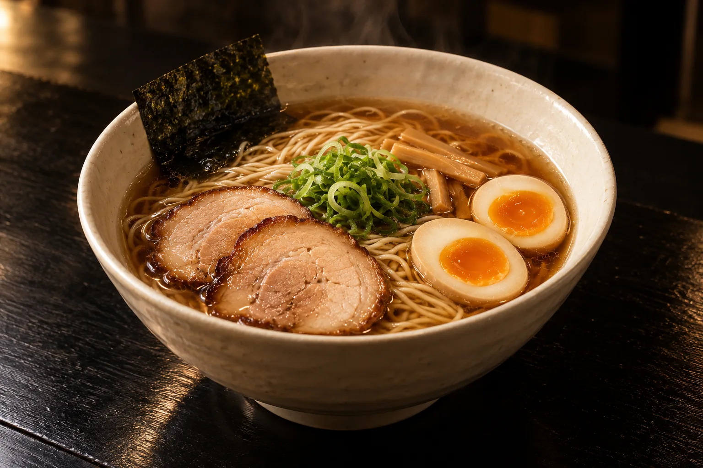

МАЛЕНЬКОЕ МЕСТО.
ДОЛГИЙ ВЕЧЕР.
ДОЛГИЙ ВЕЧЕР.
Не тот поворот.
Та самая миска.
Не обязательно знать город наизусть. Иногда достаточно заметить свет в конце переулка.
ПАР — вымышленное место, которое мы придумали для таких вечеров. Короткое меню. Открытая кухня. Место за стойкой, где можно наконец никуда не спешить.
